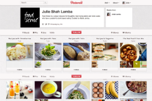

2012’s Best Summer Cookbooks
With the best of the season coming from “orchards, farms and gardens,” NPR has put together an impressive collection of 10 summer cookbooks.
May 23, 2012 / Read »

How to Make Vegetable Chips
About a month ago, I ate almost an entire box of kale chips. My brother and I were visiting our cousin in Brooklyn, and before a very thoughtfully prepared vegan…
May 17, 2012 / Read »

Join us on Pinterest!
If I could curate a cookbook for you, this would be it.
May 16, 2012 / Read »

Recipes from a Sunday Suppe
I could not figure out what to do with the delectable slices of Pear Cake that I brought home from this wonderful Sunday supper - eat them slowly, a little bit at…
May 15, 2012 / Read »